Talk / Interactive Session
3/28(日)の14時からZoomを使用したオンライントークイベントを開催します。本イベントは、①本年度の研究/プロジェクトの紹介 ②ゲストを招いたトーク ③ラボメンバーによるインタラクティブな研究紹介の３つのパートで開催されます。ZoomのURLはPeatixより参加登録をしてくださった方々にお知らせします。
第2部のゲストトークでは、we+ inc.の関口愛理さん(Designer, Engineer)と山口情報芸術センター(YCAM)の今野恵菜さん(Video/Device Engineer)をゲストとしてお招きし、xlabの筧康明准教授を含めた3名で、Narrative Materialsという切り口から表現/製作活動についてトークを行います。

